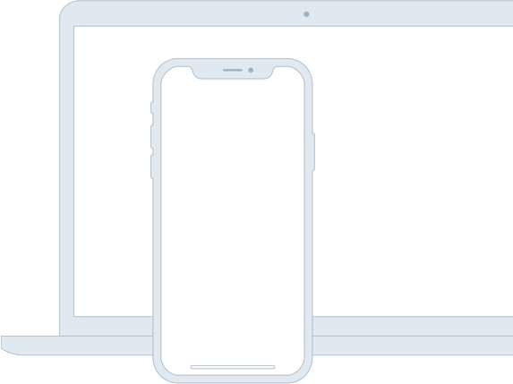

Tagline
Source helps creators do more of what they love
A device that enables collaboration will lessen the chance of work having to be completely redone.

A device that enables collaboration will lessen the chance of work having to be completely redone.
In such a test, the user performs realistic tasks by interacting with the paper prototype
First link ›Three techniques of paper prototyping used for usability testing are comps, wireframes
Second link ›Rapid prototyping involves a group of designers whoeach create a paper prototype
Third link ›Functionality is similarly unimportant, but in this case are closer to the final product
Fourth link ›In the context of information architecture, information is separate from both knowledge and data, and lies nebulously between them.